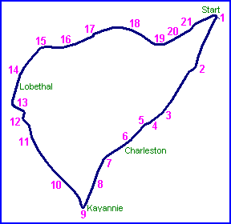
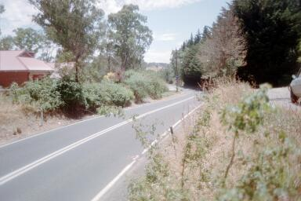
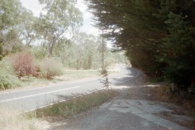
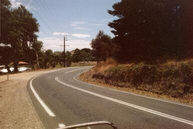
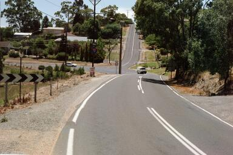
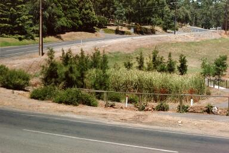

The contents of this archive were originally produced by Ray Bell and posted on the Nostalgia Forum at http://www.atlasf1.com. The text and images contained in the original postings have not been altered. Any text entered by myself for continuity purposes appears in italics.<>
|| Contents | 1 | 2 | 3 | 4 | 5 | 6 | 7 | 8 | 9 | 10 | 11 | 12 | 13 | 14 | 15 | 16 | 17 | 18 | 19 | 20 | 21 || Home ||

Numbers indicate where the pictures were taken. Click links above.
We're still climbing the hill, and we reach the top... about to descend
through the esses into Lobethal...

Looks innocent enough, but you get airborne here...

And although it's a bit poor and maybe hard to see, after that left kink in the second
pic, you're heading into the esses with a lot of speed to wipe off...



The last one is obviously looking back at the esses from what was a spectator area, now a
front yard.